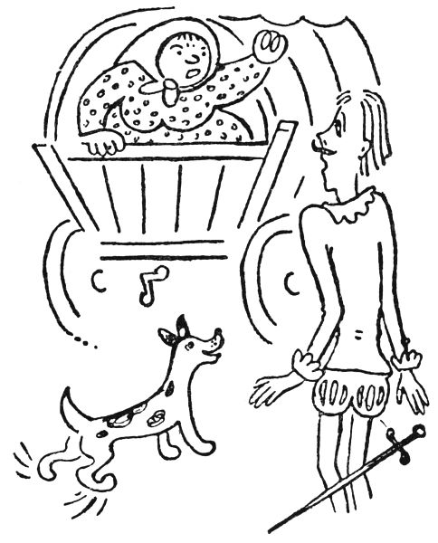

Druhá loupežnická pohádka
Pohádka o zdvořilém loupežníkovi
Je tomu už náramně dávno, tak dávno, že ani nebožtík starý Zelinka, dej mu pánbůh věčnou slávu, se na to nepamatoval, a ten přece se pamatoval i na mého nebožtíka tlustého pradědečka. Tak tedy je tomu už nesmírně dávno, co na horách Brendách panoval slavný a zlý loupežník Lotrando, mordýř ze všech nejukrutnější, se svými jednadvaceti pacholky, padesáti zloději, třiceti zlodějíčky a dvěma sty pomocníky, pašeráky a přechovávači. Tak ten Lotrando vám číhal u silnice třeba k Poříčí nebo ke Kostelci nebo i k Hronovu, až kolem pojede nějaký ten forman, kupec, žid nebo rytíř na koni; pak na něj vystoup, zařval a obral ho o všecko, a to ještě ten potrefený mohl být rád, že ho Lotrando nezapíchnul, nezastřelil nebo nepověsil na stromě. Takový vrahoun a nelida byl ten Lotrando.
Jede si takový kupeček cestou, povídá koňům hyje a čehy a těší se, zač prodá v Trutnově to své zboží. A když jede lesem, má trochu strach před loupežníky, ale aby to nedal na sobě znát, píská si pěknou písničku. A najednou vystoupí z lesa chlap jako hora, širší než pan Šmejkal nebo pan Jahelka, ale ještě o dvě hlavy větší a k tomu fousatý, že si pro samé fousy do huby nevidí; tedy takové chlapisko se vám postaví před koně a zařve: „Peníze nebo život,“ a zamíří na kupce pistolí širokou jako hmoždíř. To se ví, kupec dá peníze, a Lotrando mu sebere ještě k tomu i vůz i zboží i koně, ale i kabát, katě a holínky mu stáhne a ještě mu přidá pár bičem, aby se mu, chudákovi, lehčeji běželo domů. Jak říkám, nebyl ten Lotrando nic jiného nežli šibeničník.
Ale protože široko daleko nebylo jiného loupežníka (teprve až u Maršova byl druhý, a to byl jen žabař proti Lotrandovi), dařilo se Lotrandově loupežnické živnosti tuze dobře, takže brzo byl bohatší než leckterý rytíř, ano i továrník. A protože měl malého synáčka, řekl si starý loupežník: „A co, dám ho někam na študije, ať už to stojí pár tisícovek, já si to můžu dovolit; ať se naučí německy a francouzsky, ať umí pěkně říkat ‚pitšen‘ a ‚ževuzém‘, a na piáno hrát, a tancovat šotyš nebo kvadrilu, a jíst z talíře, a smrkat do kapesníku, jak se sluší a patří. Sic jsem jen loupežník, ale můj syn ať je jako ňákej hrabě. A už jsem to řek, a basta!“
Řek to, vzal malého Lotranda před sebe na koně a už uháněl do Broumova. Tam sesadil synáčka z koně před klášterem páterů benediktýnů a hrozně řinče ostruhami šel rovnou k páteru převorovi. „Velebnosti,“ řekl tlustým hlasem, „tady vám nechám tohohle kloučka na vychování, abyste ho naučili jíst, smrkat a tancovat a říkat ‚pitšen‘ a ‚ževuzém‘ a všechno, co se sluší, když je člověk holt kavalírem; a tady,“ řekl, „je na to pytel dukátů, lujzů, florinů, piastrů, rupií, dublonů, rublů a holandských zlatek a pistolů a sovrýnů, aby se u vás měl jako princátko.“
To řek, otočil se na patě a hajdy do lesů, nechávaje otcům benediktýnům malého Lotranda na starosti.

Tak se tedy malý Lotrando učil s mnoha princátky, hrabátky a jinými bohatými mládenečky v takovém tom konviktě u pánů páterů; a tlustý páter Spiridion ho učil říkat „pitšen“ a „gorsamadýnr“ po německu, a páter Dominik mu vtloukl do hlavy všelijaké to francouzské „trešarmé“ a „silvuplé“, a pan páter Barnabáš ho naučil všem komplimentům, menuetům a způsobným manýrám, a pan regenschori Kraupner ho učil smrkat, aby to zaznělo tence jako flétna nebo jemně jako šalmaj, a ne aby to zatroubilo jako kontrafagot, pozoun, jerišská trouba, piston nebo automobil, tak jako troubíval starý Lotrando; zkrátka naučili ho těm nejjemnějším způsobům a delikátnostem jako pravého kavalíra. Však mladý Lotrando byl v černých sametových šatech s krajkovým límečkem tuze pěkný hoch a docela zapomněl, že rostl v loupežnické jeskyni v divokých horách Brendách a že jeho otec, starý vrah a raubíř Lotrando, chodil ve volské kůži a čpěl koninou a jedl syrové maso jen tak holýma rukama, jak už to loupežníci dělají.
Zkrátka mladý Lotrando vzkvétal vědomostmi a uhlazeností, a zrovna když byl v nejlepších studiích, zatřeskla koňská kopyta před broumovským konviktem a z koně skočil ježatý pacholek a zabouchal do vrat, a když ho fráter vrátný pustil, řekl surovým hlasem, že jako jede pro mladého pána Lotranda, že jeho pantáta, jako starý Lotrando, se chystá umřít a volá k sobě jediného syna, aby převzal jeho živnost. Tu tedy mladý Lotrando se slzami v očích se rozžehnal s ctihodnými otci benediktýny, jakož i s ostatními mladými panáčky a študenty, a jel s pacholkem na Brendy přemítaje, jakou to živnost mu otec chce odkázat, a slibuje si v duchu, že ji povede bohulibě, vznešeně a s příkladnou zdvořilostí ke všem lidem.
Tak přijeli na Brendy a pacholek dovedl mladého pána k smrtelnému loži tátovu. Starý Lotrando ležel ve velikánské jeskyni na balíku nevydělaných hovězin a přikryt byl koňskou dekou.
„No tak, Vincku, ty kujóne,“ ozval se těžce, „vedeš už mého kluka?“
„Drahý otče,“ zvolal mladý Lotrando klekaje, „kéž vás Bůh dlouhá léta zachovati ráčí k radosti bližních a k nevýslovné pýše vašeho potomstva.“
„Pomalu, hochu,“ řekl starý raubíř. „Dnes pojedu do pekla a nemám mnoho času na tvé cukrování. Myslel jsem, že ti nechám dost velké jmění, abys byl z toho živ bez práce. Ale hrom do toho, kluku, jaká teď byla pro naše řemeslo mizerná léta.“
„Ach, otče,“ vzdychl mladý Lotrando, „neměl jsem tušení, že strádáte.“
„No jo,“ bručel starý. „Víš, mám pakostnici a už jsem se nemoh pouštět daleko odtud. A nejbližším silnicím se kupci, neřádi, nějak vyhýbali. Nejvyšší čas, aby mou práci převzal někdo mladší.“
„Drahý otče,“ řekl mladý pán horlivě, „přísahám vám při všem na světě, že převezmu vaši práci a budu ji plniti čestně, ochotně a ke všem co nejvlídněji.“
„Já nevím, jak pochodíš s vlídností,“ zavrčel starý. „Já jsem to dělal tak, že jsem zapích jen ty, co se chtěli bránit. Ale poklony, synáčku, jsem nedělal nikomu; víš, jaksi se to při mé živnosti nehodí.“
„A jaká je, drahý otče, vaše živnost?“
„Loupežnictví,“ řekl starý Lotrando a skonal.

Tak zůstal mladý Lotrando sám na světě, zdrcen do té duše jednak smrtí pantátovou, jednak přísahou, kterou se mu zavázal, že bude po něm loupežníkem.
Po třech dnech k němu přišel ten ježatý pacholek Vincek, že prý už není co jíst a že prý jářku se musí zase začít s pořádnou prací.
„Drahý pacholku,“ řekl mladý Lotrando žalostivě, „musí-li to tak vskutku býti?“
„Se ví,“ odpověděl Vincek nevlídně. „Tady, panečku, nám žádný páteříček nepřinese nadívané holoubě. Kdo chce jíst, ať pracuje.“
Vzal tedy mladý Lotrando překrásnou pistoli, skočil na koně a jel na silnici, no, dejme tomu na silnici u Batňovic. Tam se položil do zálohy a čekal, až tudy pojede nějaký kupec, aby ho oloupil. A skutečně za nějakou tu hodinku přijížděl po cestě pláteník, co vezl plátýnka do Trutnova.
Mladý Lotrando vystoupil z úkrytu a hluboce smekl. Pláteník se podivil, že ho zdraví takový pěkný panáček, no, a smekl taky a řek: „Navěky, mladý pane.“
Lotrando přistoupil blíže a smekl znova: „Dovolte,“ řekl sladce, „doufám, že vás nevyrušuji.“
„Ale božínku ne,“ povídá pláteník, „a čímpak bych vám moh posloužit?“
„Prosím vás, pane, co nejsnažněji,“ mluvil dále Lotrando, „abyste se nepolekal. Já jsem totiž loupežník, strašný Lotrando z Brend.“
Pláteník byl mazaný a nelek se ani trochu. „A heleme,“ řekl vesele, „tak taky kolegáček. Já jsem totiž taky loupežník, a sice Krvavý Čepelka z Kostelce. Jistě znáte, ne?“
„Nemám tu čest,“ omlouval se Lotrando rozpačitě; „jsem tu, pane kolego, dnes poprvé. Převzal jsem totiž závod svého pana otce.“
„Aha,“ řekl pláteník Čepelka, „starého Lotranda z Brend, že jo? To je stará renomovaná firma loupežnická. Moc solidní závod, pane Lotrando. To vám gratuluju. Ale víte co, já jsem byl tuze veliký kamarád vašeho nebožtíka pantáty. Tuhle jsme se potkali a on povídá: ‚Víš co, Krvavý Čepelko, jsme sousedi a kolegové, no, rozdělíme si to po dobrém; tahle silnice od Kostelce až do Trutnova bude tvá a na ní budeš loupit jenom ty.‘ Tak to řek, a na to jsme si plácli, víme?“
„Ach, prosím tisíckrát za odpuštění,“ omlouval se zdvořile mladý Lotrando. „Opravdu jsem nevěděl, že tady je váš revír. Je mi neobyčejně líto, že jsem sem vložil nohu.“
„No, pro tentokrát nevadí,“ povídá mazaný Čepelka. „Ale váš pantáta ještě řek: ‚A víš, Krvavý Čepelko, jestli sem já nebo někdo z mých lidí jen páchne nohou, tak mu můžeš vzít pistole a čepici a kabát, aby si pamatoval, že to je tvá silnice.‘ To řek ten váš starý partyka a dal mi na to ruku.“
„Je-li tomu tak,“ odvětil mladý Lotrando, „musím vás co nejuctivěji prositi, abyste přijal tuto vykládanou pistoli, můj baret s pravým pštrosím pérem a tento kabátec z anglického sametu na památku a na důkaz mé nejhlubší úcty, jakož i lítosti, že jsem vám způsobil takovou nepříjemnost.“
„Tak dobrá,“ povídal na to Čepelka, „dejte to sem a já vám to odpustím. Ale víckrát, panáčku, ať vás tu nevidím. Tak hyje, koníčky. Spámbíčkem, pane Lotrando.“
„Bůh vás provázej, šlechetný a otcovský pane,“ volal za ním mladý Lotrando a vrátil se na Brendy nejen bez kořisti, ale také bez svého vlastního kabátu. Pacholek Vincek mu pak šeredně vyčinil a dal mu naučení, aby příštího dne zapíchnul a obral prvního, koho potká.
Tak tedy druhého dne číhal mladý Lotrando se svým tenkým kordiskem na silnici u Zbečníku. A za nějakou chvíli jede tudy forman s náramným nákladem zboží.
Mladý Lotrando vystoupil a zvolal: „Je mi líto, pane, ale musím vás zapíchnout. Prosím, abyste se v rychlosti připravil a pomodlil.“
Forman padl na kolena a modlil se a přemýšlel, jak by z té šlamastyky vyvázl. Modlil se první, druhý otčenáš, a pořád ho nic chytrého nenapadalo. Už se modlil desátý a dvacátý otčenáš, a pořád nic.
„Nu tak, pane,“ zvolal mladý Lotrando dodávaje si přísnosti, „jste už připraven na smrt?“
„Kdepak,“ řekl forman jektaje zuby. „Já jsem totiž strašně velikej hříšník, třicet let jsem nebyl v kostele, klel jsem jako pohan a rouhal se a hrál ferbla a hřešil na každým kroku. Ale kdybych se moh v Polici vyzpovídat, tak by mně snad Pámbu hříchy odpustil a neuvrh by do pekla mou hříšnou duši. Víte co? Já honem pojedu do Police, a až se vyzpovídám, vrátím se sem a vy mne zapíchnete.“
„Dobrá,“ souhlasil Lotrando, „já tady zatím počkám u vašeho vozu.“
„Jo,“ řekl forman, „a vy mně, prosím vás, půjčte svýho koníčka, abych byl dřív zpátky.“
I k tomu svolil zdvořilý Lotrando, a tak forman sedl na jeho koníčka a jel k Polici, zatímco mladý Lotrando vypřáhl koně formanovy a nechal je napást se na louce.
Ale ten forman byl taškář a nejel do Police k zpovědi, ale jen do nejbližší hospody, a tam povídal, že na silnici na něho čeká loupežník; a ještě se v té hospodě na kuráž napil a s třemi čeledíny se hnal na Lotranda. A ti čtyři chlapi chudáku Lotrandovi ukrutně namlátili a hnali ho až do hor, a tak se zdvořilý loupežník vrátil do jeskyně nejen bez kořisti, ale také bez svého vlastního koníčka.
Do třetice zajel si Lotrando na silnici k Náchodu a čekal, jakou kořist mu náhoda přinese. Jede tu, jede vozejček plachtou přikrytý a v něm veze trhovník na jarmark do Náchoda samá perníková srdce. A zas mladý Lotrando se postaví do cesty a křikne: „Člověče, vzdej se, já jsem loupežník.“ Tak ho to totiž naučil ježatý Vincek.
Trhovník se zastavil, podrbal se pod čepicí a pak nadzvedl plachtu u vozu a řekl dovnitř: „Stará, je tu ňákej pan loupežník.“
Tu rozhrnula se plachta a z vozejčku vylezla stará tlustá panička, založila ruce v bok a spustila na mladého Lotranda: „Ty raubíři, rošťáku, ničemo, šibeničníku, prašivko, hrubiáne, lotře, kreminálníku, poberto, vandráku, lenochu, darebo, kujóne, lupiči, taškáři, šupáku, pobudo, lumpe, otrapo, lucipere, nemravo, holomku, špatenko a zloději zlodějská, co se to opovažuješ, takhle si přijít na poctivé lidi?“
„Promiňte, madam,“ zašeptal Lotrando zdrcen, „nevěděl jsem, že je ve voze dáma.“

„To se ví, že je,“ pokračovala trhovnice, „a jaká dáma, ty surovče, ty vrahu, ty zabijáku, ty prachkujóne, ty padouchu, ty hanebníku, ty mordýři, ty satanáši!“
„Prosím tisíckrát za odpuštění, že jsem vás tak polekal, paní,“ omlouval se Lotrando v nejhroznějších rozpacích. „Trešarmé, madam, silvuplé, ujišťuji vás svou nejpokornější lítostí, že – že –“
„Pakuj se, darebo,“ křičela ctihodná dáma, „nebo ti řeknu, že jsi nestyda, bídák, zlosyn, arcilotras, turek, pohan, vyvrhel, nezdvořák, halama, huncút, mazavka, hrubec a týgr a hrdlořez a podlec, pijan, ludrák, nelida a mameluk a prevít a kazisvět, podvodník, zločinec, mizera a vrahoun a kruťas a –“
Dále už mladý Lotrando neslyšel, neboť dal se na útěk a nezastavil se až na Brendách; a to se mu ještě zdálo, že vítr za ním nese cosi jako „… zlotřilec, trhan, lajdák, obejda, rabiát a lidožrout a Žižkovák“, třeba si sebevíc uši zacpával.
A tak to chodilo pořád. U Vodolova chtěl mladý Lotrando propíchnout žida s ranečkem na zádech, ale žid naříkal, že prý je zima, že by ho studený kord ve vnitřnostech nachladil a zábl, že prý už beztoho má kašel, a ať prý je velkomožný pan loupežník tak laskav a nahřeje trochu svůj kord nad ohněm, než ho jako propíchne. A zatímco rytířský Lotrando rozdělával oheň, aby ohřál své kordisko, žid vzal nohy na ramena, totiž ne, vzal ranec na ramena a utíkal, že nebylo po něm ani čuchu. A jindy zase u Ratibořic přepadl mladý loupežník zlatý kočár, ale v něm seděla ratibořická princezka a byla tak hezká, že se Lotrando do ní zamiloval a vzal jí jen – a to ještě po dobrém – voňavý šáteček. A to se ví, té vůně se jeho banda na Brendách nenajedla. A jindy u Suchovršic přepadl řezníka, který vedl krávu do Úpice na jatka, a chtěl ho zabít; ale řezník prosil, aby vyřídil jeho dvanácti sirotkům to a ono, a teď jim vzkazoval tak dojemné, přešlechetné a pohnutlivé věci, že se Lotrando rozplakal a řezníka propustil nejen s krávou, ale vnutil mu ještě dvanáct dukátů, aby prý dal každému svému dítěti po zlaťáku na památku po hrozném Lotrandovi; a přitom ten řezník, šibal jeden, byl starý mládenec a neměl ani kočku, natož dvanáct dětí. No zkrátka, pokaždé, když chtěl Lotrando někoho zavraždit nebo oloupit, mu do toho něco přišlo, co podnítilo jeho zdvořilost a outlocitnost, takže nic nikomu nevzal a ještě k tomu rozdal všecko své.
Takhle se ovšem jeho živnosti nevedlo; jeho pacholkové i s ježatým Vinckem se rozutekli a šli raději poctivě pracovat mezi lidi; sám Vincek se dal za mládka do hronovského mlejna, co ještě dnes stojí pod kostelem. Mladý Lotrando zůstal sám v loupežnické jeskyni na Brendách a měl hlad a nevěděl si rady. Tu si vzpomněl na pana převora u benediktýnů v Broumově, který ho míval tuzince rád, a pustil se k němu, aby se ho zeptal na radu, co má dělat.
Když k němu přišel, klekl a plakal a vypravoval, že se svému otci zavázal přísahou, že bude loupežníkem, ale že je vychován ve zdvořilosti a laskavosti, a že tedy nemůže a nemůže nikoho zabít nebo obrat proti jeho vůli. A co prý tedy si má počít.

Pan převor nato dvanáctkrát šňupl a dvanáctkrát se zamyslil, a pak řekl: „Milý synu, to ti chválím, že jsi zdvořilý a vlídný k lidem; ale loupežníkem zůstat nemůžeš, jednak proto, že je to smrtelný hřích, a jednak proto, že to neumíš. Ale abys vyhověl přísaze, kterou jsi dal svému pantátovi, budeš přepadat lidi dál, ale v ouplné počestnosti. Najmeš si mejto, budeš číhat u silnice, a když tamtudy někdo pojede, vystoupíš na něj a budeš na něm žádat dva krejcary mejta. No, a je to. A při té živnosti můžeš být zdvořilý, jak jen umíš a sobě žádáš.“
Pak napsal pan převor psaní panu okresnímu hejtmanovi do Trutnova, kde se přimlouval za mladého Lotranda, aby mu pan hejtman ráčil svěřiti nějaké to mejto. A s tím psaním se pustil Lotrando k hejtmanství do Trutnova, a opravdicky dostal mejto na silnici v Zálesí. Tak se stal zdvořilý loupežník mejtným na silnici a přepadal vozy a kočáry, aby ve vší počestnosti vybíral dva krejcary mejta.
O hromadu let později jel broumovský pan převor bryčkou do Úpice na návštěvu k panu faráři. Už předem se těšil, že u mejta v Zálesí uvidí zdvořilého Lotranda a poptá se ho, jak se mu vede. A opravdu u mejta přistoupí ke kočáru fousatý člověk – byl to sám Lotrando – a něco bruče natáhnul ruku.
Pan převor sáhl do kapsy, ale protože byl trochu tlustý, musel si jednou rukou nadzvednout břicho, aby se druhou rukou dostal do kalhot; a tak to chvilinku trvalo, než vytáh peníze.
A tu ten Lotrando spustil hrubým hlasem: „No tak, bude to? Jakpak dlouho má člověk čekat, než dostane ty dva nový?“
Pan převor se hrabal v měšečku a povídá: „Ale já nemám krejcary; prosím vás, človíčku, proměňte mně za šesták.“
„A hrom do vás,“ rozkřikl se Lotrando, „když nemáte krejcary, tak co vás sem čerti nosí? Buďto sem dáte dva krejcary, nebo táhněte nazpátek.“
„Lotrando, Lotrando,“ řekl pan převor lítostivě, „nepoznáváš mne? Kde jsi nechal svou zdvořilost?“
Lotrando se zarazil, neboť teď teprve poznal pana převora. I zabručel něco moc šeredného, ale přemohl se a řekl: „Velebnosti, nedivte se, že už nejsem zdvořilý. Viděl kdy někdo mejtného, mostného, výběrčího nebo kasíra, který by nebyl krobián?“
„To je pravda,“ řekl pan převor. „To ještě nikdo nikdy neviděl.“
„Tak vidíte,“ zabručel Lotrando. „A teď už si jeďte ke všem čertům.“
To je konec pohádky o zdvořilém loupežníkovi; snad už umřel, ale jeho potomky potkáte na mnoha a mnoha místech a poznáte je po tom, že vám s největší ochotou vynadají, i když nemají proč. A to by nemělo být.
Lidové noviny 24. 12. 1921